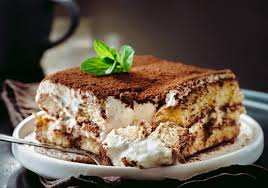

Tiramisu Recipe

Easy Tiramisu
delicious and unbelievably EASY tiramisu made with coffee soaked lady fingers, creamy mascarpone (no raw eggs!), and cocoa powder dusted on top.
Ingredients
- Ladyfingers
- Mascarpone
- Coffee
- Heavy Whipped cream
- Granulated sugar
- Vanilla extract
- Cocoa powder
-
Mix creamy filling. Beat the mascarpone, cream, sugar, and vanilla together until stiff peaks.
-
Dip lady fingers. Add the espresso and liqueur (if using) to a shallow bowl and dip the lady fingers on both sides (don't let them soak-just a quick dip!)
-
Layer mascarpone. Smooth a layer of the mascarpone/whipped cream mixture on top of the lady fingers.
-
repeat. Add another lady of lady fingers (dipped in coffee and liqueur) and another layer of cheese mixture. Dust with cocoa powder.
Home